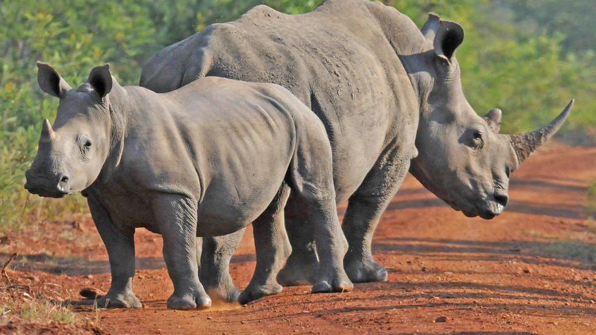
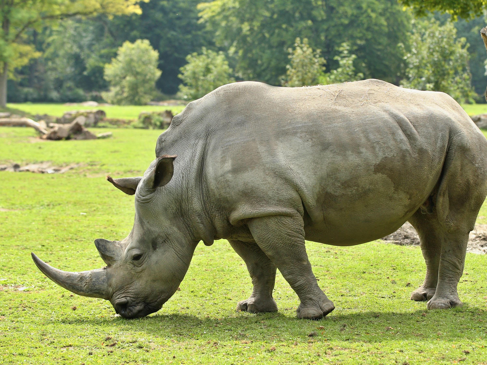
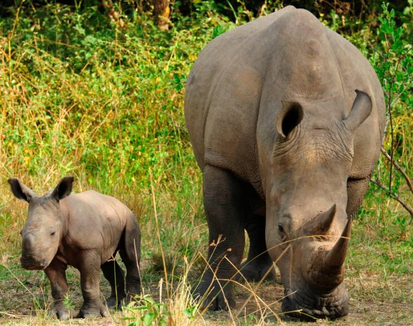
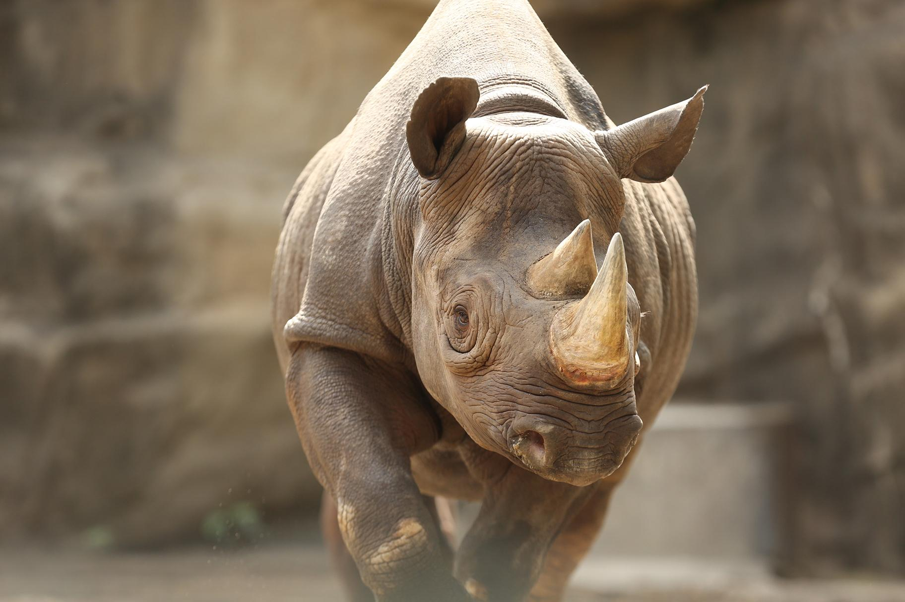

|
黑犀（Diceros bicornis）又名黑犀牛。
是犀科黑犀屬的唯一一種，產於非洲的肯尼亞、坦尚尼亞、喀麥隆、南非、納米比亞和辛巴威。儘管名叫黑犀，它們的體表顔色實際上更接近於灰白色，這個名字一般被用來區別於白犀（Ceratotherium simum），事實上這兩種犀牛的區別不在於顔色，而主要在於體型，黑犀要比白犀小許多。 成年黑犀肩高143-160釐米，身長2.86-3.05米，體重在800-1400公斤之間，最重的可達1820公斤，母犀牛要比公犀牛輕。 黑犀的一對角為角質，前角較長，一般為50釐米，最長的可達140釐米。有時候還會長出第三支比較小的角。犀牛角的作用主要用於防禦、示意和覓食。 黑犀的嘴較尖，耳朵較小，而白犀的嘴唇則比較寬，耳朵較大。  習性
 繁殖
 數量
20世紀，黑犀曾經是所有犀牛中數量最多的一種。但由於辛巴威（Zimbabwe）盜獵嚴重在20世紀後半葉，黑犀的數量急劇下降，從70,000下降到1981年的10,000到15,000頭。1990年左右該數量又降到2500頭以下。根據2003年的資料顯示，黑犀的數量已有回升，約3,610頭。黑犀的主要威脅是偷獵和棲息地的減少，人們獵取黑犀的目的是獲取它們的角。 其他介紹 黑犀牛是兩種非洲犀牛中較小的一種。白犀牛和黑犀牛之間最明顯的區別是它們的鉤狀上唇。這使它們與具有方形唇的白犀牛區分開。它們的尖唇幫助它們以灌木和樹木的葉子為食。它們有兩個角，偶爾還有第三個小後角。 在20世紀，受到歐洲獵人和定居者的控制，黑犀牛的數量急劇下降。在1960年至1995年之間，黑犀牛數量下降了98％，達到了不到2500個。從那時起，該物種已從滅絕邊緣捲土重來。由於非洲各地的持續保護工作，至今黑犀牛仍然被認為極度瀕臨滅絕，因此仍需進行大量工作，以使黑犀牛的數量甚至達到以前的一小部分，並確保其保持在那裡。野生動物犯罪在這種情況下，是偷獵和黑市交易的犀牛角繼續困擾該物種並威脅其恢復。 
|